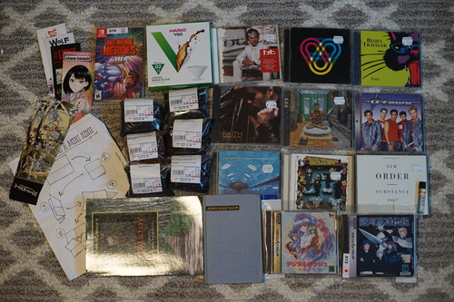
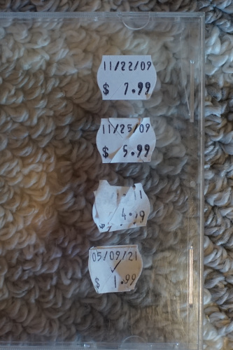
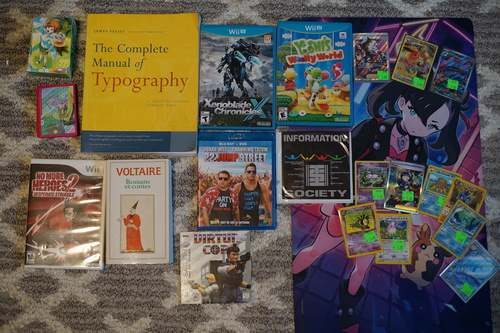

Ryan and friends and I visited downtown Seattle for a day trip~ It's always fun, but Seattle was nasty as usual.
Notable sightings: a large pile of poop, more poop I don't want to remember, an emaciated man in his 20s stripping down to his undies at a bus stop, Cody of Pink Gorilla live streaming working, "Democracy Vouchers" advertised on the sides of buses, "buy art not fentanyl" sticker, plenty of people hunched over
one more marked off my Amazon wishlist
If god made cowboys that listened to BT and not country music...
I was going to buy this but Ryan did instead. I've been joking about finding this for at least year now.
Mostly for my mom.
Can you imagine if I had found this for $2 when I was in high school? I would have gone insane.
I visited 2 art supply stores and Kinokuniya and this was all I bought somehow.
I actually looked through the CDs this time at Al's. I can't recall if I've ever done this before. I always assumed their prices were above what I was willing to pay. I was a little impressed that their 99 cent stacks were somewhat quality controlled. They had Alphaville's Forever Young for $30 and a signed copy of Skold vs KMFDM for $90. Glad I already have both of those. They're both good! AWL420 bought a YMO record that I spotted for him.
I peeled off the stickers on Blues Traveler and found out this CD has been at Al's for quite a while.
Things I did not find: 1/3 scale Daiso itabags, Doruoji, Copic replacement brush nibs
And from my favorite store, Gamer's Tavern, and just a little bit from goodwill:
The audience will refuse to believe that this isn't mine.
The only one in the Xenoblade series I haven't played other than the 3 DLC. Will I be able to handle the dub though?
This nasty dude is really growing on me.
I borrowed this from a boy in high school and actually completed it on a Wii also borrowed.
What is this??
I went and bought my games at the Tavern on Friday and then came back on Saturday to a 15% off sale. sigh......
I spent a LOT of time looking through piles of cards looking for Adaman. Does he not exist??? Give me Adaman!!
I know I didn't like Piers originally, but I can no longer understand why no one likes Piers! I saw a whole bunch of his cards and had no one to buy them for. Piers is a good boy.
And with this, I have completed my No More Heroes collection. Pink Gorilla man told me that Travis Strikes Back was a great co-op game, but there's nothing I hate more than playing video games with someone else.